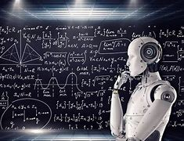
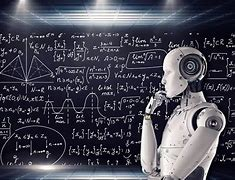

Harness the power of AI in transformative building of the world
Anotida Munandi, born on September 14, 2004, is a logistics and supply chain management student at RCU.He the youngest millionaire and businessman in Zimbabwe with his worth estimated to be between $50 to $95 million. He founded Signa leaf Technologies on his 20th birthday, September 14, 2024. Anotida's vision is to harness the power of AI and ML to solve global challenges and create impactful solutions. His entrepreneurial spirit and commitment to ethical innovation drive the success of Signaleaf Technologies.

Signaleaf Technologies was founded with a mission to harness the power of artificial intelligence (AI) and machine learning (ML) to tackle pressing challenges in healthcare, education, and environmental sustainability. The company is committed to the ethical and responsible use of technology, ensuring that their innovations drive positive societal change. By focusing on developing cutting-edge solutions, Signaleaf aims to create a significant and enduring impact on the world, improving lives and fostering a sustainable future. Their projects range from AI-driven diagnostic tools that enhance healthcare delivery, to personalized learning platforms that revolutionize education, and advanced environmental monitoring systems that promote sustainability. Through collaboration with industry leaders and continuous innovation, Signaleaf is dedicated to making a lasting difference in these critical areas. The company also emphasizes the importance of transparency and accountability in their operations, striving to build trust with stakeholders and the communities they serve. By integrating ethical considerations into every aspect of their work, Signaleaf Technologies is not only advancing technology but also ensuring that its benefits are accessible and equitable for all.
.png)
The Signaleaf Technologies website provides a comprehensive overview of the company's projects, mission, and vision. It serves as a hub for information on the latest advancements in AI and ML, as well as the company's initiatives and success stories. The website is designed to be a resource for those interested in the transformative power of technology.
Aikom is a chatbot created by Anotida Munandi to help students at RCU with academics assignments. AI chatbots are revolutionizing education by providing personalized, immediate suppo rt to students and educators. These chatbots can answer questions, offer explanations, and provi de additional resources, acting as virtual teaching assistants. They help in managing administrative t asks, offering 24/7 support, and creating a more engaging learning experience. AI chatbots can also a dapt to individual learning styles and paces, making education more accessible and tailored to each stud ent's needs
AIKOM AI, created by Anotida Munandi, is a prime example of how AI chatbots can be utilized in education. Designed to assist RCU students, AIKOM AI provides personalized support, helping students with their coursework, answering queries, and offering guidance on various academic topics. By leveraging AIKOM AI, RCU students can access instant help and resources, enhancing their learning experience and improving their academic performance. This tool exemplifies the potential of AI in creating a more efficient and supportive educational environment.
.jpeg) 

Artificial Intelligence (AI) is a dynamic and multifaceted field of computer science dedicated to creating systems and machines that can perform tasks requiring human intelligence. These tasks encompass a wide array of activities, including learning from experience, understanding and responding to language, recognizing patterns, solving complex problems, and even simulating human decision-making processes. AI systems leverage various techniques such as machine learning, neural networks, and deep learning algorithms to process and analyze vast amounts of data, recognize intricate patterns, and make informed decisions. Over time, these systems can improve their performance autonomously through learning and adaptation, becoming more accurate and efficient. AI's applications are extensive and transformative, ranging from personal assistants like Siri and Alexa, which can understand and respond to voice commands, to sop histicated medical diagnostics tools that can analyze medical images and predict disease outcomes. In the automotive industry, AI powers autonomous vehicles, en abling them to navigate and make real-time decisions on the road. Financial ins titutions utilize AI for tasks such as fraud detection, algorithmic trading, and risk management. In the realm of environmental sustainability, AI helps in monito ring climate change, optimizing energy consumption, and managing natural resource s more efficiently. By automating complex processes and providing actionable insi ghts from extensive datasets, AI holds the potential to revolutionize industries, enhance productivity, drive innovation, and address some of the most significant challenges facing humanity, ultimately paving the way for a smarter, more conne cted, and sustainable future.
Machine Learning (ML) is a branch of artificial intelligence that focuses o n the development of algorithms and models that allow computer s to learn from and make decisions based on data. Rather than relying on explicit programming, ML systems use data to identify patterns and improve their performance over time. The process begins with feeding data into a machine learning model, which then adjusts its parameters to minimize errors and optimize outcomes. This iterativ e process involves training, validation, and testing phases to ensure the m odel's accuracy and robustness. ML encompasses various techniques such as supervi sed learning, where the model is trained on labeled data; unsupervised learning, where the model identifies patterns in unlabeled data; and reinforcement learning, where the model learns by interacting with its environment and receiving feedback. Applications of ML are vast and diverse. In the healthc are sector, ML models can predict disease outbreaks, personalize treatment plans, and assist in medical imaging analysis. In finance, ML algorithms detect fraudulent transactions, optimize inves tment strategies, and assess credit risks. E-commerce platforms use ML for recommendation systems that sugge st products to users based on their browsing history and preferences. In everyday life, ML powers virtual ass istants like Siri and Alexa, enabling them to understand and respond to voice commands. The technology is als o fundamental to autonomous vehicles, where it helps in navigation, obstacle detection, and decision-making o n the road. ML's impact extends beyond these applications, driving innovation in fields such as natural language proc essing, image and speech recognition, and predictive analytics. By automating complex processes and uncover ing insights from large datasets, ML enhances decision-making and efficiency across various domains. It is a transformative technology with the potential to revolutionize industries, solve complex problems, and imp rove the quality of life. As ML continues to evolve, it is poised to play an even more integral role in sha ping the future of technology and society.
"Signaleaf Technologies has transformed our approach to environmental sustainability. The AI-driven tools have enabled us to monitor and manage our resources more efficiently." — Jane Samp, Environmental Specialist
"With the personalized learning platform provided by Signaleaf, our students have shown remarkable improvement in their academic performance." — John Gonzo, Educator
"The AI diagnostic tools from Signaleaf have revolutionized our healthcare services, making accurate diagnoses faster and more accessible." — Dr. Maria Garcia, Healthcare Professional
Signaleaf Technologies envisions a future where advanced artificial intelligence and machine learning solutions drive meaningful and positive change across critical global sectors. Their primary focus areas are healthcare, education, and environment al sustainability, where they aim to harness technology to address some of the most p ressing challenges of our time. In healthcare, Signaleaf aspires to revolutionize medi cal diagnostics, personalized treatments, and patient care through innovative AI solut ions. In education, they seek to create personalized learning experiences that adapt t o individual student needs, fostering a more inclusive and effective educational envir onment. For environmental sustainability, Signaleaf is dedicated to developing AI tool s that can monitor and mitigate the effects of climate change, optimize resource use, and promote sustainable practices. The company's vision is deeply rooted in ethical principles, transparenc y, and inclusivity. Signaleaf is committed to ensuring that their technologic al advancements are accessible and beneficial to all segments of society, includ ing underserved communities. They prioritize ethical considerations in their AI development processes to build trust and accountability among their stakeholders. Through continuous innovation and collaboration with industry leaders, acade mic institutions, and government bodies, Signaleaf aims to stay at the forefront o f technological advancements. Their ultimate goal is to create a sustainable and equitabl e future where technology serves as a catalyst for societal progress and environmental stewar dship. By pushing the boundaries of what's possible with AI and ML, Signaleaf Technologies st rives to make a lasting and positive impact on the world, improving the quality of life for peopl e everywhere and safeguarding the planet for future generations.
Anotida Munandi, born on September 14, 2004, is not only a logistics and supply chain management student at RCU but also a visionary entrepreneur and the youngest millionaire businessman in Zimbabwe, with an estimated net worth between $50 to $95 million. He founded Signaleaf Technologies on his 20th birthday, September 14, 2024, embodying his commitment to harness the power of artificial intelligence (AI) and machine learning (ML) to address global challenges and create impactful solutions. Anotida's vision for Signaleaf is rooted in ethical and responsible innovation, ensuring that technological advancements benefit society as a whole.
He aspires to revolutionize healthcare by developing AI-driven diagnostic tools that enhance the accuracy and accessibility of medical services, personalized learning platforms that cater to individual educational needs, and advanced environmental monitoring systems that promote sustainability. Anotida's entrepreneurial spirit is driven by a profound belief in the potential of AI and ML to transform industries and improve lives. He envisions a future where technology serves as a catalyst for positive societal change, bridging gaps in healthcare, education, and environmental sustainability.
With a steadfast commitment to transparency and inclusivity, Anotida aims to ensure that the benefits of AI and ML are accessible to all, particularly underserved communities. His ambitions extend beyond business success; he is dedicated to fostering a culture of continuous innovation and collaboration, working closely with industry leaders, academic institutions, and government bodies. Through Signaleaf Technologies, Anotida Munandi strives to make a lasting and meaningful impact on the world, championing a future where technological advancements drive ethical progress and global sustainability.
Harness the power of AI in transformative building of the world